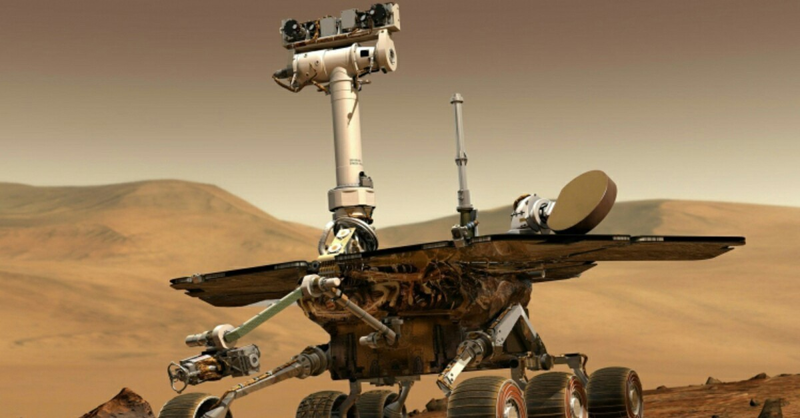

Первые Марсоходы
|

«Оппортьюнити»
«Оппортьюнити» (англ. Opportunity — «благоприятная возможность»), или MER-B (сокр. от Mars Exploration Rover — B') —
второй марсоход космического агентства НАСА из двух, запущенных США в рамках проекта Mars Exploration Rover. Был выведен с
помощью ракеты-носителя Дельта-2 7 июля 2003 года. На поверхность Марса опустился 25 января 2004 года тремя неделями позже
первого марсохода «Спирит», успешно доставленного в другой район Марса, смещённый по долготе примерно на 180 градусов.
«Оппортьюнити» совершил посадку в кратере Игл, на плато Меридиана. Название марсоходу, в рамках традиционного конкурса НАСА,
было дано 9-летней девочкой российского происхождения Софи Коллиз, родившейся в России и удочерённой американской семьёй из
Аризоны. На начало 2018 года «Оппортьюнити» продолжал эффективно функционировать, уже в 55 раз превысив запланированный срок
в 90 солов, проехав к январю 2018 года 45 км, всё это время получая энергию только от солнечных батарей. Очистка солнечных
панелей от пыли происходит за счёт естественного ветра Марса. В конце апреля 2010 года продолжительность миссии достигла 2246
солов, что сделало её самой длительной среди аппаратов, работавших на поверхности «красной планеты» (предыдущий рекорд
принадлежал автоматической марсианской станции «Викинг-1», проработавшей с 1976 по 1982 год). 12 июня 2018 года марсоход
перешёл в спящий режим из-за длительной и мощной пылевой бури, препятствующей поступлению света на солнечные батареи, с тех
пор на связь не выходил. 13 февраля 2019 года NASA официально объявило о завершении миссии марсохода